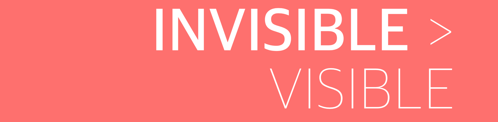
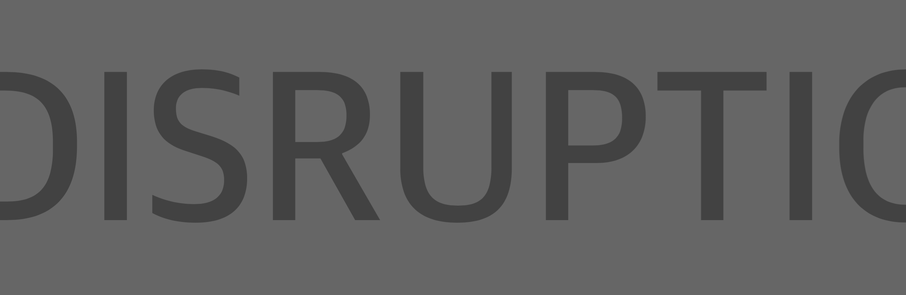
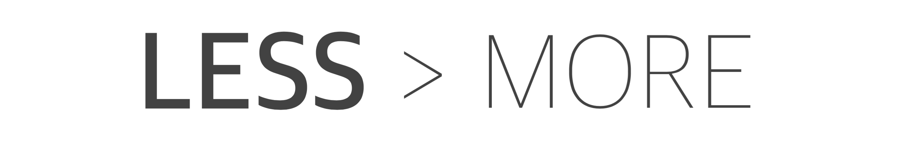

5 Tips for Applying Lateral Thinking in Product Design
April 8, 2016
Out of box thinking: take a problem, find its obvious solution and eliminate it. Now think of alternative solution.
"In our ability to think about something differently lies the power to make it different." —Marianne Williamson
1. Always think of 10 times better not 10% better
Lateral Thinking is using your creative and imaginative thinking to arrive at the best possible solution.
Most of companies the today create products without this and there are some best companies who create a product with lateral thinking. The companies who apply lateral thinking to crate a product leads the market than the ones without lateral thinking but far more features. So how can we create a product with lateral thinking?
In his book 'Smartcuts: How Hackers, Innovators, and Icons Accelerate Success' Shane Snow asks a question on lateral thinking;
Pretend you are driving a car in the middle of a thunderstorm and you happen upon three people on the side of the road.
- A frail old woman, who looks on the verge of collapse
- Another is a friend who once saved your life
- The other is the romantic interest of your dreams, and this is a once-in-a-lifetime opportunity to meet her/him
You have only one other seat in the car.
Who do you pick up?
There’s a good reason to choose any of the three.
- The old woman needs help
- The friend deserves your payback
- And clearly, a happy future with the woman/man of your dreams will have an enormous long-term impact on your life
So, who should you pick?
Solution: The Old women of course. Then give the car keys to your friend, and stay behind with the romantic interest to wait for the bus!
Were you surprised that the path to the most success in that scenario involved stepping outside and getting rain soaked?
This dilemma is an exercise in lateral thinking. It’s the kind of puzzle in which the most elegant solution is revealed only when you attack it sideways. New ideas emerge when you question the assumptions upon which a problem is based.
That’s life and thats the reality of how you get to your dreams. You have to come out of your comfort zone to get what you really want. So how can you use this lateral thinking in your companies product design, projects, and also in your life.
Always think of 10 times better not 10% better solutions
ALWAYS ASK “10X BETTER” QUESTIONS FOR YOUR PRODUCT:
- What if this has to be ten times better? — this is a forcing question for getting you out of box
- What if I had to do it for 10X (100 times) chapter? — so much cheaper that you can’t cut cost anymore, cant make more cheaper. You have to fundamentally rethink it
- How would someone in other industry will look at this problem? — how would a ballet dancer would look at this problem? how would a sports person would look at this problem? How would a poor guy who is in hunger for days would think about this problem?
The best example to understand this is how Apple makes its iPhone which is 10 times better than the previous phone, not 10% better. And there are other smartphones with more feature then iPhone is not considered as the good enough phone.
2. Keep Space for Assumptions
You know the difference between the pessimist and optimist? When the opportunity knocks the door pessimist complains about the noise, where optimist open the door, sometimes with a knife (just in case!).
Therefore always keep an assumption solution.
Pretend that you’re trapped in a magical room with only two exits. Through the first exit is a room made from a giant magnifying glass, and the blazing hot sun will fry you to death. Through the second door is a room with fire-breathing dragon. Which do you go through?
First door, of course. Simply wait until the sun goes down.
So here are your assumptions:
- You want to get out of the room
- You have to choose one of the two options
- You have to do something now to get out alive
- Room one will kill you no matter what (or it seems for time being)
- Room two will kill you no matter what
Make a list of assumptions and make sure to eliminate the ones which doesn’t fit your logic. Now you can also come up with how can you kill the dragon with sun by turning the magnifying glass (without the sun killing you, of course).
3. Do not think outside the box. Get rid of the box
THINK ABOUT THIS BUSINESS MODEL:
In Mumbai, there is a group that runs of its kind ‘insurance’ service for ticket-less travel on local trains. Now, considering that millions of passengers travel in these locals everyday, the probability of getting caught is quite less. This is how their ‘Business Model’ is operated. The traveler pays a very small monthly fees to this group. It is about 1/10th of the going rate for a monthly railway pass. This way the traveler never buys a ticket and audaciously keeps traveling in the trains. If he somehow he gets caught, he does not argue. He casually pays the fine, goes to his agent, hands over the receipt and simply gets reimbursed. A clear win-win situation. Well, except the Indian Railways of course!
I don’t know if this story is true, nor do I support this insurance group. However, you have to wow for their business model. Don't you think so?
They have created a market which wasn’t inside the box.
4. Have the right feature than having all the feature
CONSIDER THIS;
One day a lion went on the hunt for gazelles. The lion believed that his might, roar and magnificent physique where enough to stun the gazelles,to petrify them and lead them right into his open jaws. He was wrong. The gazelles where quick on their feet, and quite easily outran the king of the beasts. The lion used status quo thinking. Why wouldn’t the loudest the most reputed, the most known individuals not score big ones every time? Maybe the gazelle relearned running routes through the safari and disrupted the lion’s usual run-of-the-mill hunt.
Most of the companies goes in making products with all the features than making the right feature. Before adding a feature ask if you’d 5 people who brought your product, will 4 of them use this feature? If not, remove or put in next few years sprint to—do list.
5. Keep Changing. Keep Running.
Three years ago in an conference at Infosys I’d said to the crowd,
Change is The New Constant
and at that time I didn’t knew it would be so true, and would become my way of life in 2016.
When the above story of ‘Lion and Gazelle’ was discussed in my aviation school, my instructor shared lives one of finest philosophies. “No matter if you are king lion or brave gazelle. You have to keep running.” he said, “If the lion doesn’t run he dies of hunger. If gazelle doesn’t, he is on the lunch plate. So both of them have to keep running.”
So is true for your business today. You have to keep innovating. And change is the only way. Just keep running. Because, even if you are on the right track, you will get to run over if you just sit there.
Thank you. Download and share this article as an whitepaper.
End Note: this post is inspired from and dedicated to Shane Snow. After reading his book “Smartcuts: How Hackers, Innovators, and Icons Accelerate Success” I got inspired to stitch this post. I would recommend his book to everyone from a school kid to an entrepreneur.